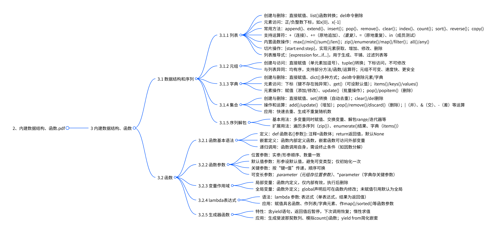

Chapter2：内建数据结构、函数¶
总览¶
3 内建数据结构、函数¶
本章是文档核心部分，分为“数据结构和序列”与“函数”两大板块，详细阐述了Python中常用的数据存储与代码封装方式。
¶
3.1 数据结构和序列¶
数据结构和序列是Python中存储和处理数据的基础，包含列表、元组、字典、集合四种核心类型，以及序列解包的实用技巧。
3.1.1 列表¶
列表是Python中最重要的可变有序序列，支持多种元素类型，且能自动管理内存，但非尾部操作效率较低。
1. 列表的创建与删除
- 创建：可通过=直接赋值（如a_list = [1,2,3]），或用list()函数将元组、range对象、字符串等转换为列表（如list(range(1,5))）；空列表可表示为[]或list()。
- 删除：使用del命令删除整个列表（如del a_list），删除后无法再访问。
2. 列表元素访问
- 支持正整数下标（从0开始，0表示第一个元素）和负整数下标（-1表示最后一个元素），例如x = list('Python')中，x[0]为'P'，x[-1]为'n'。
3. 列表常用方法
- 元素增减：append(x)在尾部追加元素，extend(L)追加另一个列表所有元素，insert(index,x)在指定位置插入元素；pop([index])删除并返回指定位置元素，remove(x)删除首个值为x的元素，clear()清空列表。
- 查询统计：index(x)返回首个x的索引，count(x)统计x出现次数。
- 排序与反转：sort(key=None, reverse=False)原地排序，reverse()原地逆序。
- 复制：copy()返回列表浅复制。
4. 列表对象支持的运算符
- 加法+：连接两个列表，返回新列表（效率低）；复合赋值+=为原地追加（效率高）。
- 乘法*：实现元素重复，返回新列表；*=为原地重复。
- 成员测试in：判断元素是否在列表中，查询时间随列表长度线性增加。
5. 内置函数对列表的操作
- 统计类：max()取最大值，min()取最小值，sum()求和，len()获取元素个数。
- 迭代处理类：zip()将多列表元素组合为元组，enumerate()返回下标与值的迭代对象，map()将函数映射到每个元素，filter()按函数结果过滤元素。
- 逻辑判断类：all()判断所有元素是否等价于True，any()判断是否存在等价于True的元素。
6. 列表的切片操作
- 语法：[start:end:step]，start为起始位置（默认0），end为截止位置（默认列表长度，不包含），step为步长（默认1，负步长表示反向切片）。
- 功能：可获取部分元素（如aList[3:6]取第4到6个元素）、增加元素（如aList[len(aList):] = [9]在尾部加元素）、替换修改元素（如aList[::2] = [0]*3隔一个修改一个）、删除元素（如del aList[::2]隔一个删一个）。
7. 列表推导式语法
- 语法：[expression for expr1 in sequence1 if condition1 ...]，逻辑等价于循环语句，更简洁。
- 应用：生成特定列表（如[x*x for x in range(10)]生成0-9的平方）、平铺嵌套列表（如[num for elem in vec for num in elem]）、过滤元素（如[i for i in aList if i>0]筛选正数）、矩阵转置（如[[row[i] for row in matrix] for i in range(4)]）等。
3.1.2 元组¶
元组是固定长度、不可变的轻量级序列，访问速度比列表快，适合存储常量值。
1. 元组的创建与访问
- 创建：用=直接赋值（如x = (1,2,3)），单个元素需加逗号（如x = (3,)）；空元组为()或tuple()；也可用tuple()将其他迭代对象转换为元组（如tuple(range(5))）。
- 访问：与列表一致，支持正、负下标访问（如x[0]、x[-1]），但无法修改元素值。
2. 元组与列表的异同
- 相同点：均为有序序列，支持双向索引、count()、index()方法，以及len()、map()等函数和+、in等运算符。
- 不同点：元组不可变（无法增删改元素，无append()、remove()等方法），访问速度更快，更安全（传递参数时防止修改）。
3.1.3 字典¶
字典是无序可变的“键:值”序列，键需为不可变类型（如整数、字符串、元组）且唯一，值可重复。
1. 字典的创建与删除
- 创建：用=直接赋值（如aDict = {'server': 'db...', 'database': 'mysql'}）；空字典为dict()；也可通过dict(zip(keys, values))（用键值对列表创建）、dict(name='Dong')（关键参数创建）、dict.fromkeys(keys)（键为空值创建）等方式。
- 删除：用del删除指定键的元素（如del aDict['age']），或删除整个字典。
2. 字典元素的访问
- 下标访问：aDict['键']，键不存在则抛异常。
- get()方法：aDict.get('键', 默认值)，键不存在时返回默认值（如aDict.get('address', 'Not Exists.')）。
- 其他方法：items()返回键值对，keys()返回键，values()返回值。
3. 元素添加、修改和删除
- 添加/修改：aDict['键'] = 值，键存在则修改值，不存在则添加新键值对；update()方法可批量添加/修改（如aDict.update({'a':97, 'age':39})）。
- 删除：del删除指定键元素；pop('键')删除并返回指定键值；popitem()随机弹出一个键值对（空字典抛异常）。
3.1.4 集合¶
集合是无序可变序列，元素唯一且为不可变类型，适合去重和集合运算。
1. 集合对象的创建与删除
- 创建：用=直接赋值（如a = {3,5}）；空集合为set()；用set()将其他迭代对象转换为集合（自动去重，如set([0,1,0,2])结果为{0,1,2}）。
- 删除：clear()清空集合；del删除整个集合。
2. 集合操作和运算
- 元素增减：add(x)添加元素（重复忽略）；update(集合)合并另一个集合元素；pop()随机删除并返回元素；remove(x)删除指定元素（不存在抛异常）；discard(x)删除指定元素（不存在忽略）。
- 集合运算：|或union()求并集，&或intersection()求交集，-或difference()求差集，^或symmetric_difference()求对称差集；>、<判断子集关系（如x < z判断x是否为z的真子集）。
3. 集合的应用
- 快速去重（如newSet = set(listRandom)）；生成指定范围不重复随机数（如用set的add()方法确保元素唯一）。
3.1.5 序列解包¶
序列解包可同时为多个变量赋值，支持列表、元组、字符串、字典等多种序列。
1. 基本用法：如x,y,z = 1,2,3（直接赋值）、x,y,z = v_tuple（元组解包）、x,y = y,x（交换变量）、x,y,z = range(3)（range对象解包）。
2. 扩展用法：遍历多序列（如for k,v in zip(keys, values)）、遍历enumerate()结果（如for i,v in enumerate(x)）、遍历字典（如for k,v in s.items()）。
3.2 函数¶
函数是代码复用的核心，可封装重复执行的逻辑，保证代码一致性，Python函数支持嵌套、递归、多种参数形式等特性。
3.2.1 函数基本语法¶
函数通过def关键字定义，包含函数名、参数列表、注释和函数体。
1. 基本语法：
None；函数体需缩进；即使无参数，也需保留空圆括号。
2. 函数的嵌套定义：函数内部可定义另一个函数（嵌套函数），嵌套函数可访问外部函数变量，如：
| Python | |
|---|---|
| Python | |
|---|---|
3.2.2 函数参数¶
函数参数有多种类型，可灵活满足不同调用需求。
1. 位置参数：调用时实参和形参顺序、数量需严格一致（如def demo(a,b,c):...，调用demo(3,4,5)）。
2. 默认值参数：形参定义时指定默认值，调用时可省略赋值（如def demo(a,b,c=5):...）；默认值仅初始化一次，避免用可变类型（如列表）作默认值，可改为old_list=None后在函数内初始化。
3. 关键参数：调用时按“键=值”传递，实参顺序可与形参不一致（如demo(c=8, a=9, b=0)）。
4. 可变长参数：
- *parameter：接收多个位置参数，存储为元组（如def demo(*p): print(p)，调用demo(1,2,3)输出(1,2,3)）。
- **parameter：接收多个关键参数，存储为字典（如def demo(**p):...，调用demo(x=1,y=2)，p为{'x':1,'y':2}）。
3.2.3 变量作用域¶
变量作用域指变量起作用的代码范围，分为局部变量和全局变量。
1. 局部变量：函数内部定义的变量，仅在函数内有效，函数执行结束后自动删除，访问速度比全局变量快。
2. 全局变量：函数外部定义的变量，可通过global关键字在函数内声明并修改（如def demo(): global x; x=3）；若函数内仅引用变量值未赋值，变量默认为全局变量；若函数内赋值且未用global声明，变量默认为局部变量。
3.2.4 lambda表达式¶
lambda表达式用于创建匿名小函数，仅含一个表达式，适合作为函数参数。
1. 语法：lambda 参数: 表达式，表达式结果为函数返回值（如f = lambda x,y: x+y，f(1,2)返回3）。
2. 应用：给变量赋值（具名函数）、作为列表/字典元素（如L = [(lambda x:x**2), ...]）、作为map()、sorted()等函数的参数（如list(map(lambda x:x+10, L))、data.sort(key=lambda x: len(str(x)))）。
3.2.5 生成器函数¶
包含yield语句的函数为生成器函数，可创建生成器对象，具有惰性求值特性，适合处理大数据。
1. 特性：yield语句返回值后暂停函数执行，下次调用next()或通过for循环遍历可恢复执行（如生成斐波那契数列的生成器函数）。
2. 应用：生成无限序列（如模拟count()函数生成递增序列）、批量处理数据（避免一次性加载大量数据到内存）；yield from可简化生成器嵌套（如yield from 'abc'依次返回'a'、'b'、'c'）。
3.1 数据结构和序列¶

3.1.1 列表核心内容总结¶
本节从列表的基础特性、创建与删除、元素访问、常用方法、支持的运算符、内置函数操作及切片操作七个维度，全面讲解Python列表的核心知识，明确使用规则与效率优化建议。
3.1.1 列表的基础特性¶
列表是Python核心内置对象，具备有序连续内存存储、自动内存管理、灵活元素类型支持的特点，同时存在操作效率限制。
1. 内存与效率特性
- 列表占用连续内存空间，增删元素时会自动扩展或收缩内存，保证元素无间隙，减少程序员内存管理负担。
- 非尾部插入/删除元素会导致后续元素整体移动，严重降低效率；同时会改变后续元素索引，可能引发意外错误，因此建议优先从尾部操作。
2. 元素形式与类型
- 形式上，元素放在[]中，用逗号分隔；仅含[]表示空列表。
- 支持存储不同类型元素，包括整数、实数、字符串等基本类型，以及列表、元组、字典、集合、函数等对象，示例：[10, 20, 30, 40]、['spam', 2.0, 5, [10, 20]]、[{3}, {5:6}, (1, 2, 3)]。
3. 内存管理与使用建议
- Python采用“基于值的自动内存管理”，变量和列表元素均存储值的引用（内存地址），这是列表能存不同类型元素的核心原因。
- 列表功能强但开销大，实际开发需根据需求选择合适数据类型，避免过度使用。
3.1.1.1 列表的创建与删除¶
列表支持直接赋值、类型转换两种创建方式，不再使用时可通过del命令删除，操作灵活且明确。
1. 列表创建方法
- 直接赋值：用=将列表赋值给变量，如a_list = ['a', 'b', 'mpilgrim', 'z', 'example']；空列表可写为a_list = []。
- 类型转换：通过list()函数将元组、range对象、字符串、字典、集合等可迭代对象转换为列表，具体示例：
- 元组转换：list((3,5,7,9,11))，结果为[3, 5, 7, 9, 11]。
- range对象转换：list(range(1, 10, 2))，结果为[1, 3, 5, 7, 9]。
- 字符串转换：list('hello world')，结果为['h', 'e', 'l', 'l', 'o', ' ', 'w', 'o', 'r', 'l', 'd']。
- 集合转换：list({3,7,5})，结果为[3, 5, 7]（集合无序，转换后顺序可能变化）。
- 字典转换：list({'a':3, 'b':9, 'c':78})（仅转“键”），结果为['a', 'c', 'b']；list({'a':3, 'b':9, 'c':78}.items())（转“键:值”对），结果为[('b', 9), ('c', 78), ('a', 3)]。
- 空列表创建：x = list()。
2. 列表删除方法
- 使用del命令删除列表对象，如x = [1, 2, 3]，执行del x后，列表对象被删除，再次访问x会抛出NameError异常（提示变量未定义）。
3.1.1.2 列表元素访问¶
列表通过整数下标访问元素，支持正、负两种下标形式，可快速定位任意位置元素。
- 正下标规则：从0开始，0对应第一个元素，1对应第二个元素，以此类推，如x = list('Python')（列表为['P', 'y', 't', 'h', 'o', 'n']），x[0]返回'P'。
- 负下标规则：从-1开始，-1对应最后一个元素，-2对应倒数第二个元素，以此类推，如上述列表中x[-1]返回'n'。
3.1.1.3 列表常用方法¶
列表提供11种核心内置方法，涵盖元素增减、查询统计、排序反转、复制清空等功能，且均为原地操作（不改变列表内存地址）。
1. 元素增减方法
- append(x)：向尾部追加单个元素，如x = [1,2,3]，x.append(4)后列表为[1,2,3,4]。
- extend(L)：将列表L的所有元素追加至尾部，如x.extend([5,6,7])后列表为[1,2,3,4,5,6,7]。
- insert(index, x)：在index位置插入x，后续元素后移；index超范围时，在头部/尾部插入，如x.insert(0, 0)后列表为[0,1,2,3,4,5,6,7]。
- pop([index])：删除并返回index位置元素，默认删尾部，如x = [1,2,3,4,5,6,7]，x.pop()返回7，x.pop(0)返回1。
- remove(x)：删除首个值为x的元素，后续元素前移，如x = [1,2,1,1,2]，x.remove(2)后列表为[1,1,1,2]。
- clear()：清空列表元素，保留列表对象，如x.clear()后列表为[]。
2. 查询统计方法
- index(x)：返回首个值为x的元素索引，无x则抛异常，如x = [1,2,2,3,3,3]，x.index(2)返回1。
- count(x)：返回x在列表中的出现次数，无x则返回0，如上述列表中x.count(3)返回3，x.count(5)返回0。
3. 排序反转与复制方法
- sort(key=None, reverse=False)：原地排序，key指定排序规则，reverse=False为升序（默认），reverse=True为降序，如x.sort(key=lambda item:len(str(item)), reverse=True)按字符串长度降序排序。
- reverse()：原地逆序列表元素，如x = [0,1,2,3]，x.reverse()后列表为[3,2,1,0]。
- copy()：返回列表浅复制，生成新列表对象。
3.1.1.4 列表对象支持的运算符¶
列表支持加法、乘法、成员测试三种核心运算符，不同运算符的操作特性（是否原地操作）与效率存在差异。
1. 加法运算符+与+=
- +：连接两个列表，返回新列表，涉及元素复制，效率低，如x = [1,2,3]，x = x + [4]后x为[1,2,3,4]，内存地址改变。
- +=：向列表追加元素，属于原地操作，效率与append()一致，如x += [5]后x为[1,2,3,4,5]，内存地址不变。
2. 乘法运算符*与*=
- *：实现元素重复，返回新列表，如x = [1,2,3,4]，x = x * 2后x为[1,2,3,4,1,2,3,4]，内存地址改变。
- *=：原地实现元素重复，如x *= 2后x为[1,2,3,4,1,2,3,4,1,2,3,4,1,2,3,4]，内存地址不变。
3. 成员测试运算符in
- 测试元素是否在列表中，查询时间随列表长度线性增加（效率低于集合的常数级查询），如3 in [1,2,3]返回True，3 in [1,2,'3']返回False。
3.1.1.5 内置函数对列表的操作¶
多个Python内置函数可对列表进行统计、迭代处理、逻辑判断等操作，同时支持标准库函数扩展功能。
1. 统计类函数
- max()：返回列表元素最大值，如x = [0,6,10,9]，max(x)返回10；支持key参数指定规则，如max(x, key=str)返回9。
- min()：返回列表元素最小值，如上述列表中min(x)返回0。
- sum()：返回列表元素之和，如x = [0,1,2,...,10]，sum(x)返回55。
- len()：返回列表元素个数，如上述列表中len(x)返回11。
2. 迭代处理类函数
- zip()：将多列表元素组合为元组，返回zip对象；列表不等长时以短列表为准，如list(zip(x, [1]*11))生成含11个(元素,1)的列表。
- enumerate()：返回含“下标+元素”的迭代对象，如list(enumerate(x))生成[(0,0), (1,6), ..., (10,3)]。
- map()：将函数映射到列表每个元素，返回map对象。
- filter()：按函数返回值过滤元素，保留返回True的元素。
3. 逻辑判断类函数
- all()：测试所有元素是否等价于True，如x = [0,6,10]，all(x)返回False（0等价于False）。
- any()：测试是否存在等价于True的元素，如上述列表中any(x)返回True。
4. 扩展函数
- 标准库functools中的reduce()、itertools中的compress()、groupby()、dropwhile()等函数，可进一步扩展列表操作功能。
3.1.1.6 列表的切片操作¶
切片通过[start:end:step]语法实现，支持元素获取、增加、修改、删除，且具有越界安全特性（不抛异常）。
1. 切片语法规则
- start：起始位置，默认0；end：截止位置（不包含），默认列表长度；step：步长，默认1。
- step为负时表示反向切片，需保证start在end右侧；可省略默认值（如aList[:]等价于aList[0:len(aList):1]）。
2. 切片核心功能
- 获取部分元素：返回新列表，越界时自动截断或返回空列表，如aList = [3,4,5,6,7,9,11,13,15,17]，aList[3:6]返回[6,7,9]，aList[100:]返回[]。
- 增加元素：原地操作，不改变列表内存地址，如aList = [3,5,7]，aList[len(aList):] = [9]（尾部加9）、aList[:0] = [1,2]（头部加1,2）、aList[3:3] = [4]（中间加4），最终列表为[1,2,3,4,5,7,9]。
- 修改元素：替换切片对应的元素，等号两边列表长度可不同，如aList = [3,5,7,9]，aList[3:] = [4,5,6]后列表为[3,5,7,4,5,6]。
- 删除元素：通过del命令结合切片删除，支持连续/非连续元素，如del aList[:3]（删前3个元素）、del aList[::2]（隔一个删一个）。
3.1.2 元组¶
本节从元组的基础定义、创建与访问方式，以及与列表的异同三个维度，系统讲解Python元组的核心特性，明确其适用场景与使用规则。
元组是为解决列表“功能强但负担重、效率低”问题而设计的轻量级序列，具备固定长度、不可变的核心特性。
1. 核心特性：作为Python序列对象，元组长度固定，创建后无法修改元素值、增加或删除元素，避免了列表因动态调整内存带来的额外开销。
2. 形式规则：所有元素需放在一对圆括号()中，元素间用逗号分隔；若元组仅含一个元素，必须在元素后加逗号（如(3,)），否则会被识别为单一元素本身（如(3)等价于3）。
3.1.2.1 元组的创建与访问¶
元组支持直接赋值、空元组声明、类型转换三种创建方式，访问时与列表一致支持双向索引，且部分内置函数返回含元组的可迭代对象。
1. 元组的创建方法
- 直接赋值：用=将元组直接赋值给变量，如x = (1, 2, 3)，通过type(x)可查看类型为<class 'tuple'>；单元素元组需加逗号，如x = (3,)，结果为(3,)。
- 空元组创建：可声明为x = ()或x = tuple()。
- 类型转换：通过tuple()函数将其他迭代对象（如range对象）转换为元组，如tuple(range(5))，结果为(0, 1, 2, 3, 4)。
2. 元组的访问方式
- 双向索引访问：支持正整数下标（0开始，对应第一个元素）和负整数下标（-1开始，对应最后一个元素），如x = (1, 2, 3)中，x[0]返回1，x[-1]返回3。
- 不可修改限制：尝试修改元组元素会抛出异常，如x[1] = 4，会提示TypeError: 'tuple' object does not support item assignment。
3. 内置函数与元组：部分内置函数的返回值是含元组的可迭代对象，如enumerate()返回“下标+元素”的元组迭代对象（list(enumerate(range(5)))结果为[(0, 0), (1, 1), ..., (4, 4)]），zip()返回多序列元素组合的元组迭代对象（list(zip(range(3), 'abcdefg'))结果为[(0, 'a'), (1, 'b'), (2, 'c')]）。
3.1.2.2 元组与列表的异同¶
元组与列表均为有序序列，共享部分操作方法与函数，但在可变性、方法支持、访问效率、安全性上存在显著差异。
1. 元组与列表的相同点
- 序列属性：均为有序序列，支持双向索引访问元素。
- 方法与函数：均支持count()（统计元素出现次数）、index()（获取元素首次索引）方法；len()（统计元素个数）、map()（函数映射）、filter()（元素过滤）等内置函数均可作用于两者。
- 运算符：均支持+（序列连接）、+=（原地连接）、in（成员测试）等运算符。
2. 元组与列表的不同点
- 可变性：元组是不可变序列，无法修改元素值、增加或删除元素；列表是可变序列，支持元素增删改。
- 方法支持：元组无append()、extend()、insert()（元素增加）、remove()、pop()（元素删除）等方法，仅支持del命令删除整个元组；列表具备完整的元素增删改方法。
- 切片操作：元组切片仅用于访问元素，无法通过切片修改、增加或删除元素；列表切片可实现元素访问、修改、增加、删除。
- 访问效率：Python对元组内部实现优化，访问速度比列表更快。
- 安全性：元组不可修改，调用函数时传递元组参数可防止参数被函数修改；列表可变，难以保证参数不被修改。
3. 适用场景差异：若需存储常量值，仅用于遍历等无修改需求的场景，建议使用元组（效率高、安全）；若需动态调整元素（增删改），则使用列表。